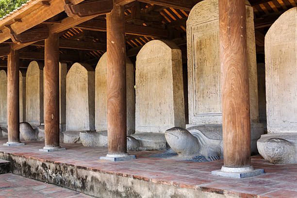

Vọng: Chiêm ngưỡng • Sử: Kịch thanh âm 3D • Hành: Giải mã City Quest
Một hành trình khám phá di sản Văn Miếu – Quốc Tử Giám cùng Người Dẫn Sử.
Bạn là một người lữ hành trong hành trình tìm kiếm những dấu ấn lịch sử còn lưu lại tại Văn Miếu – Quốc Tử Giám. Khi bước đến mỗi trạm, bạn sẽ được dẫn dắt bởi Người Dẫn Sử thông qua kịch thanh âm 3D: tiếng bước chân, tiếng bút nghiên, tiếng trò chuyện của người học trò, tiếng khắc bia...
Hoàn thành các thử thách City Quest tại 3 trạm để mở khóa trọn bộ 3 Ấn ký Di Sản và nhận danh hiệu 🏆 Sĩ tử số.
Hoàn thành từng trạm, thu thập Ấn ký Di Sản và tiến gần hơn đến danh hiệu 🏆 Sĩ tử số.
Nhìn lại – Chiêm ngưỡng – Hồi tưởng không gian di sản.
Lắng nghe – Cảm nhận – Khám phá kịch thanh âm 3D tái hiện lịch sử.
Tương tác – Giải mã – Tiếp bước City Quest và nhận Ấn ký Di Sản.
Chủ đề: Khởi đầu hành trình tri thức – Đức và Tài
"Người lữ hành, hãy quan sát lại hai bên Đại Trung Môn và trả lời câu hỏi sau (tối đa 3 lần thử)."
Chủ đề: Ánh sáng tri thức – Lan tỏa và kế thừa
Gói trải nghiệm: 39.000đ — Quét mã QR để mở khóa hành trình.
Chủ đề: Lưu danh hậu thế – Giá trị của tri thức và sự cống hiến

Những dấu ấn bạn đã thu thập trên hành trình Vọng Sử Hành.
Hai cổng bên Đại Trung Môn có tên Thành Đức và Đạt Tài.
🔒 Chưa mở khóaKhuê Văn Các xây dựng năm 1805; tầng trên có 4 ô cửa tròn.
🔒 Chưa mở khóa82 bia Tiến sĩ dựng từ năm 1484 (Lê Thánh Tông), UNESCO ghi danh năm 2011.
🔒 Chưa mở khóa